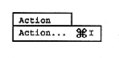
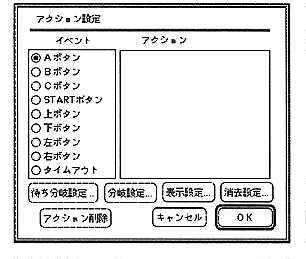

Action
Actions can be set for cursor objects and time objects placed in collision frames and scenarios. Select the target to be set and select “Action” to display the action setting dialog box. Set the content to be executed. The event that is the condition of the action varies as follows depending on the target of the action.
Target of action | Selectable events |
collision frame | A button |
Cursor object | A button |
Time object | Timeout |
To set the action, select the event radio button and select the action classification button. The tag name and object list will open. Select the action execution destination. Figure 2.16 shows the action setting dialog, and Table 2.4 describes the action classification buttons.
